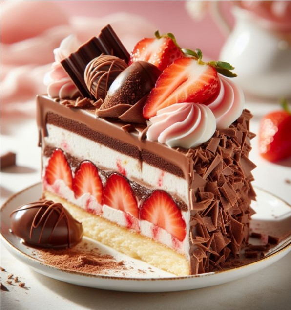
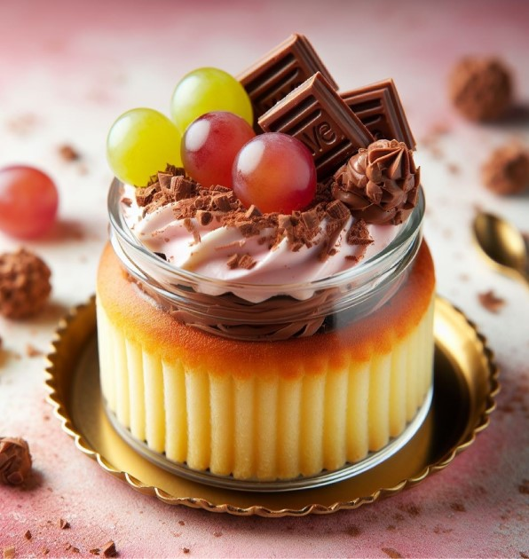
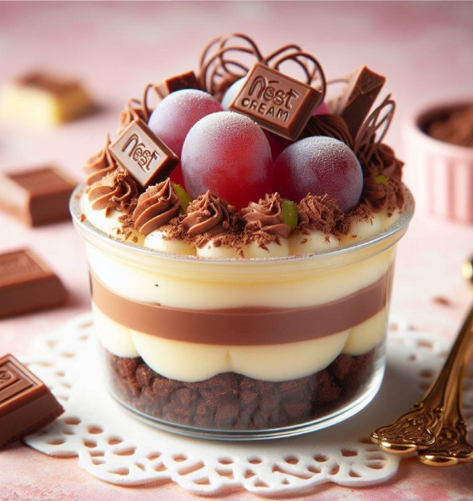
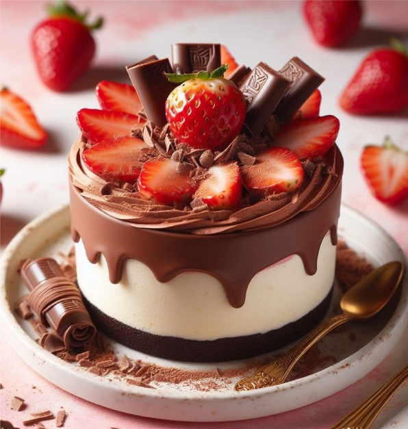
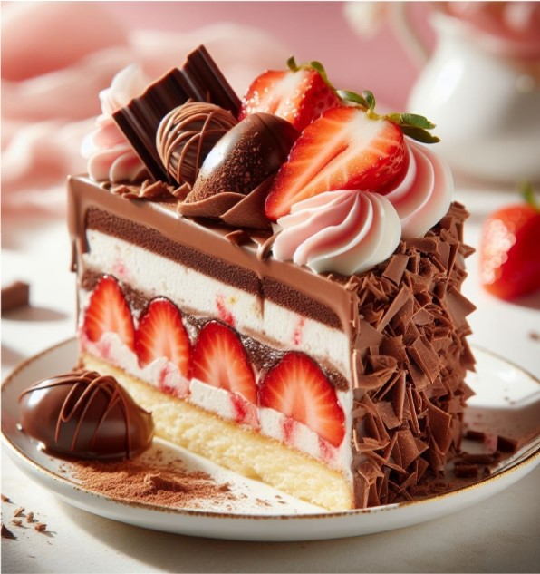
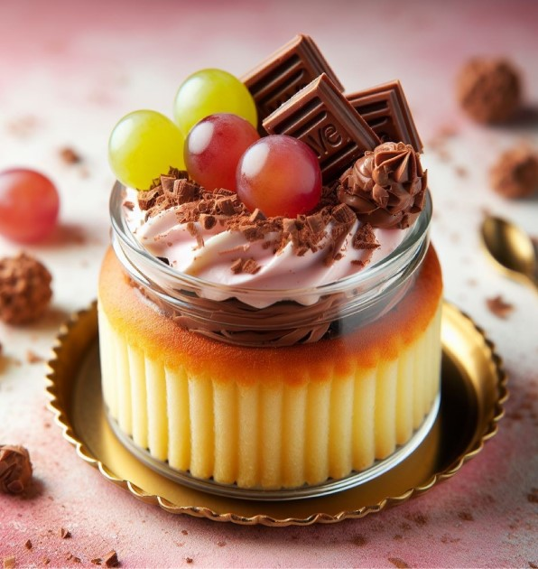
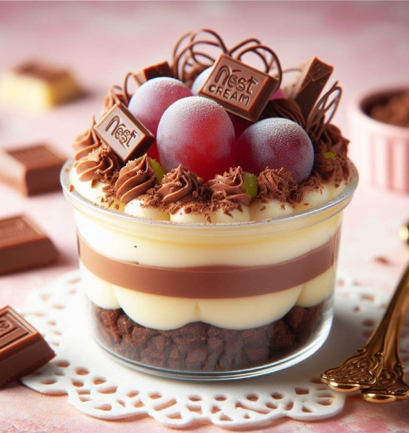
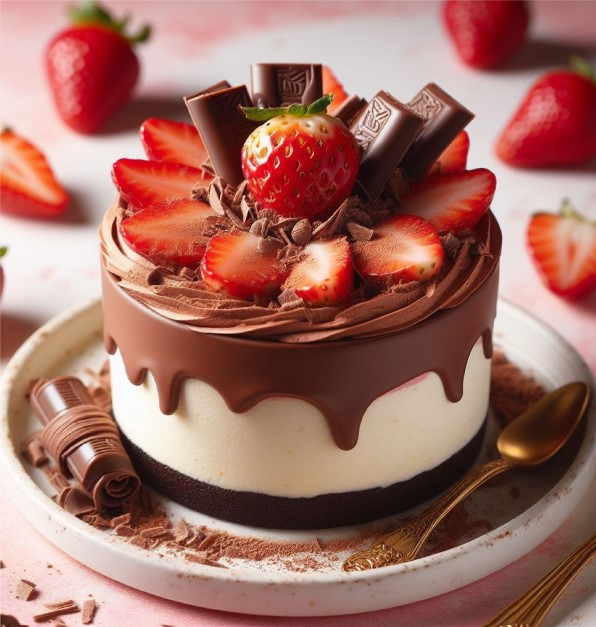

Bem-vindo à Pura Doçura! Nossa doceria artesanal oferece delícias feitas com amor e ingredientes de alta qualidade, perfeitas para qualquer ocasião. Venha adoçar seu dia com nossos bolos, tortas, brigadeiros e cupcakes!
Bem-vindo à Pura Doçura! Nossa doceria artesanal oferece delícias feitas com amor e ingredientes de alta qualidade, perfeitas para qualquer ocasião. Venha adoçar seu dia com nossos bolos, tortas, brigadeiros e cupcakes!

A Pura Doçura nasceu de um sonho doce de nossa fundadora, Sara, que desde criança adorava criar
sobremesas para sua família e amigos. Inspirada pelas receitas caseiras de sua avó, ela decidiu
transformar sua paixão em um negócio. Em 2015, abriu as portas de sua primeira loja, com a missão de
trazer felicidade através de cada doce.
Desde então, a Pura Doçura tem se dedicado a produzir delícias artesanais com ingredientes de alta
qualidade e muito amor. Cada receita é cuidadosamente elaborada, combinando tradição e inovação para
oferecer uma experiência única. Hoje, nossa doceria é reconhecida pela sua excelência e carinho em cada
criação, fazendo parte dos momentos especiais de muitas famílias.

Descubra receitas exclusivas, dicas de decoração, histórias inspiradoras e novidades do mundo das sobremesas. Aprenda a fazer doces irresistíveis com tutoriais passo a passo e fique por dentro das tendências em confeitaria. Seja você um iniciante ou um amante de sobremesas, nosso blog é o lugar perfeito para se inspirar e adoçar a vida!
INGREDIENTES:
1 xícara de farinha de trigo (aproximadamente 120g)
1/4 de xícara de amido de milho (maisena)
1/2 xícara de doce de leite (aproximadamente 120g)
1/4 de xícara de manteiga (aproximadamente 60g), em temperatura ambiente
1/4 de xícara de açúcar (aproximadamente 50g)
1 ovo
1/2 colher de chá de fermento em pó
1 pitada de sal
Açúcar de confeiteiro para polvilhar (opcional)
INSTRUÇÕES:
Preparar os Ingredientes:
Reúna todos os ingredientes e pré-aqueça o forno a 180°C. Forre uma assadeira com papel manteiga ou unte com
manteiga e polvilhe farinha.
Misturar os Ingredientes Úmidos:
Em uma tigela, bata a manteiga com o açúcar até obter uma mistura cremosa e clara. Adicione o ovo e continue
batendo até incorporar bem.
Adicionar o Doce de Leite:
Acrescente o doce de leite à mistura de manteiga e açúcar, mexendo até que fique homogêneo.
Combinar Ingredientes Secos e Úmidos:
Em uma tigela separada, misture a farinha, o amido de milho, o fermento e o sal. Gradualmente, adicione esta
mistura seca aos ingredientes úmidos, mexendo até formar uma massa homogênea. Se a massa estiver muito
pegajosa, adicione um pouco mais de farinha.
Modelar os Biscoitos:
Com as mãos, faça pequenas bolinhas de massa e coloque-as na assadeira, deixando um espaço entre elas.
Pressione levemente cada bolinha com um garfo para achatar e criar um desenho decorativo.
Assar:
Leve os biscoitos ao forno pré-aquecido e asse por cerca de 10 a 12 minutos, ou até que estejam levemente
dourados nas bordas. Não deixe dourar demais para que fiquem macios.
Esfriar:
Retire os biscoitos do forno e deixe esfriar na assadeira por alguns minutos antes de transferi-los para uma
grade para esfriar completamente.
Finalizar:
Se desejar, polvilhe os biscoitos com açúcar de confeiteiro depois de esfriarem.
Servir:
Sirva os biscoitos de doce de leite com café, chá ou leite.
Dicas: br
Para um toque especial, você pode rechear os biscoitos com mais doce de leite antes de assar.
Experimente adicionar um pouco de canela ou essência de baunilha à massa para variar o sabor.
Aproveite seus deliciosos biscoitos de doce de leite!

Bem-vindo ao setor de dicas do nosso blog! Estamos aqui para compartilhar segredos doces com você. Prepare-se para descobrir dicas para cozinhar doces deliciosos em casa. Vamos começar!

1. Use ingredientes frescos: Opte por ingredientes frescos e de alta qualidade para garantir o melhor
sabor em seus doces.
2. Meça com precisão: Utilize medidas exatas para ingredientes secos e líquidos para obter resultados
consistentes.
3. Mantenha a temperatura controlada: Preste atenção à temperatura do forno e dos ingredientes para
evitar que seus doces queimem ou não assem corretamente.
4. Não mexa demais: Ao misturar a massa, evite mexer em excesso para não perder a leveza e a textura
desejada.
5. Use formas adequadas: Escolha formas e utensílios de cozinha adequados para cada tipo de doce para
garantir que eles assem uniformemente.
6. Deixe esfriar antes de decorar: Espere os doces esfriarem completamente antes de decorá-los para evitar
que a cobertura derreta.
7. Experimente sabores: Não tenha medo de experimentar combinações de sabores diferentes para criar doces
únicos e surpreendentes.
8. Aprenda técnicas básicas: Domine técnicas básicas de confeitaria, como temperagem de chocolate e preparo
de caldas, para elevar seus doces a um novo patamar.
9. Armazene corretamente: Armazene seus doces adequadamente para manter a frescura e o sabor por mais tempo.
10. Divirta-se: Cozinhar doces é uma forma de arte! Divirta-se experimentando e compartilhando seus doces
com amigos e familiares.
Nossa doceria está aberta das 08:00 às 18:00 de Quarta a Domingo. Este horário é padrão para todas as nossas lojas. Se houver alguma alteração nos horários devido a feriados ou eventos especiais, iremos informar antecipadamente em nossas redes sociais e em nosso site.
Sim, fazemos entregas! Oferecemos serviço de entrega para a maioria das áreas dentro da nossa região de atendimento. Para saber se entregamos na sua área e para obter mais informações sobre taxas de entrega, entre em contato conosco ou consulte a seção de entrega em nosso site.
.Sim, temos opções para várias dietas especiais, incluindo sem glúten, sem lactose e veganas. Nossos produtos são rotulados com clareza para que você possa identificar facilmente quais atendem às suas necessidades dietéticas. Além disso, estamos sempre trabalhando para expandir nossa variedade de produtos para atender às necessidades de todos os nossos clientes.
Você pode fazer um pedido de várias maneiras! Visite nossa loja pessoalmente, ligue para nós ou faça seu pedido online através do nosso site. Para encomendas personalizadas ou pedidos grandes, recomendamos entrar em contato conosco com antecedência para garantir disponibilidade e atendimento personalizado.
Aceitamos uma variedade de formas de pagamento para sua conveniência. Isso inclui dinheiro, cartões de débito e crédito das principais bandeiras, além de pagamento online seguro através de plataformas confiáveis.
Sim, oferecemos degustações para eventos especiais mediante solicitação. Entre em contato conosco com antecedência para agendar uma degustação e discutir suas necessidades específicas. Estamos comprometidos em garantir que você esteja completamente satisfeito com os produtos escolhidos para o seu evento especial.


 






